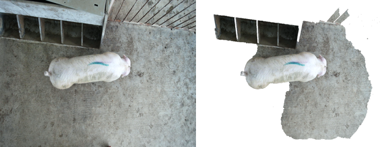

Duas pesquisas sobre a produção animal no Paraná, com os resultados mostrados para quem produz e para quem apoia o produtor: o que os dados dizem, o que já funciona e o que ainda falta.
Juntamos a produção anual de leite de todos os municípios do Paraná (IBGE) com o clima medido em Castro (INMET) e testamos modelos de previsão contra uma regra simples: repetir o número do ano anterior.
Soma dos municípios. Fonte: IBGE, Pesquisa da Pecuária Municipal (SIDRA, tabela 74).
| Ano | Registrado | Previsto | Queda ≥10% |
|---|
Valores em mil litros. Previsão do modelo Random Forest para 2017 a 2019, anos que ele não viu no treino.
Nos modelos, a produção do ano anterior respondeu por 97% do peso das decisões. Chuva, temperatura e umidade quase não mudaram a previsão.
Repetir o número do ano anterior errou em média 1.139 mil litros por município. O melhor modelo errou 1.521.
Em 24% dos casos de teste a produção caiu 10% ou mais. Os modelos acertaram essas quedas como num sorteio (área sob a curva 0,49). Por enquanto, não servem de alerta.
Usamos uma só estação, a de Castro, para o estado inteiro. O próximo passo é usar clima por região, uso do solo e relevo.
Treino com 2008 a 2016, teste com 2017 a 2019. Dados: IBGE/SIDRA tabela 74 e INMET estação A819 (Castro). Código: github.com/GabyQueiroz/CITREN_leite.
Uma câmera fixa no teto fotografa o animal de cima. O programa separa o porco do fundo e estima o peso em quilos, sem tirar o animal da baia.

Os números de erro ainda não valem. O teste usou só a amostra de 30 fotos (3 animais) que vem junto com a base. Nessa amostra, o programa leu como peso o número da foto (de 1 a 10) e não o peso real do animal, que está no nome da pasta (por exemplo, 73,36 kg).
As imagens de atenção confirmam: o modelo olhou para a grade da baia, não para o porco.
Isso não depende do peso correto. Mostra qual modelo cabe num celular ou num computador simples da granja.
Tempo medido em computador comum, sem placa de vídeo. Código: github.com/GabyQueiroz/PesoSuinosDL.